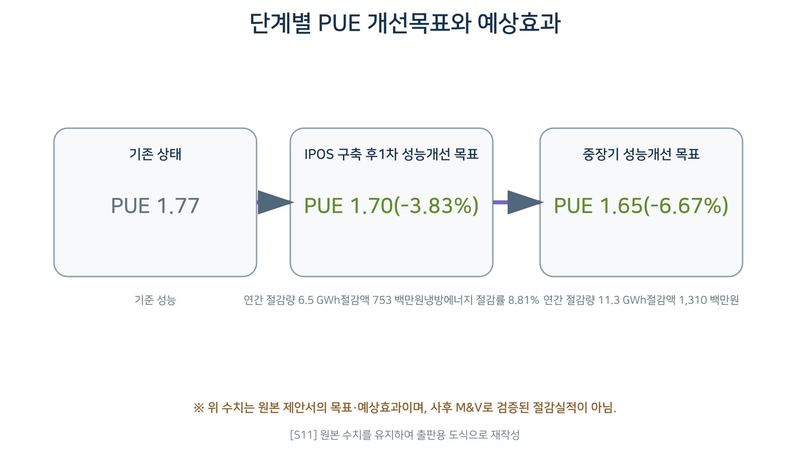

데이터로 찾는 산업·건물 에너지절감 실무 — 102쪽
그림 23-2. 단계별 PUE 개선목표와 예상효과. [S11] 원본 제안서 수치를 유지해 출판용 도식으 로 재작성. 제안단계 목표·예상효과이며 사후 M&V 검증실적이 아님. KPI·Baseline·진단 로직 기준년도 3 개 센터 합산 전력사용량 약 176,885 MWh/년, 전력비 약 20,486 백만원/년. 기준 PUE 약 1.82, 2017 년 추정 평균 PUE 약 1.77. 냉방설비 약 594 대, 총 용량 약 14,890 RT, 평균 냉방부하 약 3,154 RT, 평균 부하율 약 21%. 단기 목표 PUE 1.70: 약 6.5 GWh/년, 중장기 PUE 1.65: 약 11.3 GWh/년의 제안단계 개선효과.

인쇄본 기준 p. 102